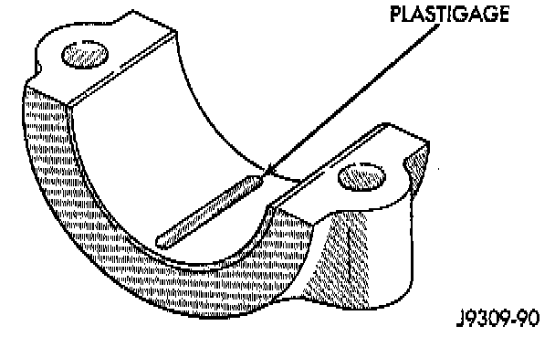
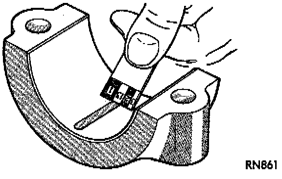

Inspection
PLASTIGAGE METHODEngine crankshaft bearing clearances can be determined by use of Plastigage or equivalent. The following is the recommended procedure for the use of Plastigage:
NOTE: The total clearance of the main bearings can only be determined by removing the weight of the crankshaft. This can be accomplished by either of two methods:
Preferred Method
Shimming the bearings adjacent to the bearing to be checked in order to remove the clearance between upper bearing shell and the crankshaft. This can be accomplished by placing a minimum of 0.254 mm (0.010 inch) shim (e.g. cardboard, match-book cover, etc.) between the bearing shell and the bearing cap on the adjacent bearings and tightening bolts to 18 Nm (13 ft. lbs.). The number of main bearing will vary from engine to engine.
^ When checking #1 main bearing shim #2 main bearing.
^ When checking #2 main bearing shim #1 & 2 main bearing.
^ When checking #3 main bearing shim #2 & 4 main bearing.
^ When checking #4 main bearing shim #3 & 5 main bearing.
^ When checking #5 main bearing shim #4 & 6 main bearing.
^ When checking #6 main bearing shim #5 & 7 main bearing.
^ When checking #7 main bearing shim #6 main bearing.
CAUTION: Remove all shims before reassembling engine.
Alternative Method
The weight of the crankshaft can be supported by a jack under the counterweight adjacent to the bearing being checked.
PLASTIGAGE PROCEDURE
1. Remove oil film from surface to be checked. Plastigage is soluble in oil.

2. Place a piece of Plastigage across the entire width of the bearing shell in the cap approximately 6.35 mm (1/4 inch) off center and away from the oil holes. (In addition, suspected areas can be checked by placing the Plastigage in the suspected area). Torque the bearing cap bolts of the bearing being checked to 115 Nm (85 ft. lbs.).

3. Remove the bearing cap and compare the width of the flattened Plastigage with the metric scale provided on the package. Locate the band closest to the same width. This band shows the amount of clearance in thousandths of a millimeter. Differences in readings between the ends indicate the amount of taper present. Record all readings taken. Plastigage generally is accompanied by two scales. One scale is in inches, the other is a metric scale.
NOTE: Plastigage is available in a variety of clearance ranges. The 0.025 - 0.076 mm (0.001 - 0.003 inch) range is usually the most appropriate for checking engine bearing clearances.